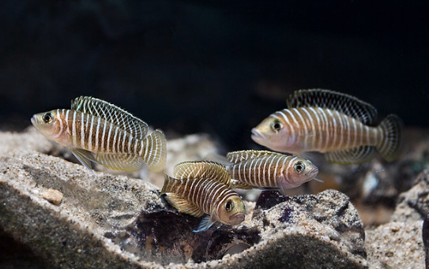

Systématique
- Ordre : Cichliformes
- Famille : Cichlidae
- Genre : Neolamprologus
- Espèce : N. similis
- Auteur : Buscher, 1992

Neolamprologus similis est l'un des plus petits cichlidés au monde. C'est un "conchicole" (habitant des coquilles) endémique du lac Tanganyika. Il est souvent confondu avec N. multifasciatus, mais s'en distingue par son patron mélanique : les barres verticales sombres chez N. similis se prolongent sur la tête et le front, alors qu'elles s'arrêtent au niveau de l'opercule chez son cousin.
Le mâle atteint environ 4,5 cm de longueur totale, tandis que la femelle est minuscule, dépassant rarement 3 cm. Le corps est beige-argenté barré de nombreuses lignes verticales brunes. Sa petite taille lui permet de se réfugier entièrement dans les coquilles d'escargots vides du genre Neothauma.
Malgré sa taille réduite, c'est un poisson extrêmement courageux et territorial. Neolamprologus similis vit en colonie organisée selon une structure sociale complexe. Contrairement à d'autres conchicoles plus solitaires, il forme des clans où plusieurs générations peuvent cohabiter. Chaque individu possède sa propre coquille, qu'il défend avec acharnement contre tout intrus, même beaucoup plus gros que lui.
En aquarium, ils passent une grande partie de leur temps à terrasser le sable pour enfouir ou dégager leurs coquilles. Le spectacle de leur activité incessante est fascinant. Ils sont moins territoriaux envers leurs propres alevins que d'autres espèces, ce qui permet de voir la colonie s'agrandir naturellement dans le bac.
Mode : Ovipare, pondeur sur substrat caché (conchicole).
La femelle attire le mâle à l'entrée de sa coquille par des frétillements. Les œufs sont déposés au fond de la coquille. Le mâle fertilise la ponte depuis l'entrée en envoyant sa laitance par des mouvements de nageoires, car il est souvent trop gros pour entrer complètement dans la coquille de la femelle.
La femelle reste à l'intérieur pour ventiler les œufs, ne sortant que brièvement pour se nourrir. Les alevins sortent de la coquille environ 10 jours après la ponte. Ils restent à proximité immédiate de l'entrée pour s'y réfugier au moindre signe de danger. Ils acceptent rapidement des nauplies d'artémias ou de la nourriture sèche finement broyée.
Dimorphisme sexuel : Le mâle est nettement plus grand et massif que la femelle. À part la taille, les patrons de coloration sont identiques. Chez les spécimens matures, le mâle présente une tête plus forte.
Espérance de vie : 5 à 8 ans en aquarium.
L'espèce est endémique du lac Tanganyika (Afrique de l'Est), où elle fréquente les "champs de coquilles" situés sur les fonds sablonneux entre 10 et 30 mètres de profondeur. Ces zones sont jonchées de milliers de coquilles vides de Neothauma tanganyicense qui s'accumulent au fil des siècles.
L'eau du lac est caractérisée par une grande stabilité thermique, une forte alcalinité (pH élevé) et une dureté importante. Le courant est généralement faible en profondeur, mais l'eau est extrêmement limpide et oxygénée.
Répartition

Origine naturelle :
- Afrique de l'Est : Lac Tanganyika (endémique).
- Localité type : Près de l'île de Karilani, Tanzanie.
Statut : Espèce commune dans le lac, très populaire en aquariophilie pour les petits volumes (nano-aquariums de cichlidés).
Paramètres de maintenance
Température : 24 à 27 °C.
pH : 8,0 à 9,0 (eau alcaline obligatoire).
GH : 10 à 20 °dGH (eau dure).
Aménagement : Sable fin (indispensable) et nombreuses coquilles d'escargots (type Bourgogne ou Neothauma).
Volume conseillé : Minimum 40-60 L pour une petite colonie.
Régime alimentaire
Régime : Omnivore à tendance carnivore.
Dans la nature, il se nourrit de micro-invertébrés et de zooplancton passant à proximité de sa coquille.
En aquarium, il accepte tout : paillettes, micro-granulés, ainsi que le congelé (cyclops, artémias, daphnies). Il est important de distribuer la nourriture de manière à ce qu'une partie atteigne le fond près des coquilles.